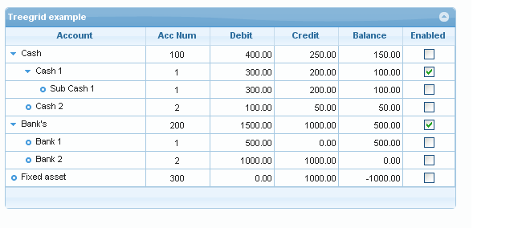

Guriddo jqGrid
¶Project Documentation
Overview¶
Guriddo jqGrid is an Ajax-enabled JavaScript control that provides solutions for representing and manipulating tabular data on the web. Since the grid is a client-side solution loading data dynamically through Ajax callbacks, it can be integrated with any server-side technology, including PHP, ASP, Java Servlets, JSP, ColdFusion, and Perl.
Guriddo jqGrid uses a jQuery Java Script Library and is written as plug-in for that package. For more information on jQuery, please refer to the jQuery web site .
For styling, Guriddo jqGrid can be used with Bootstrap CSS or jQuery UI.
Note
The grid doesn't depend on these Java Script libraries and it is not necessary to load them.
Guriddo jqGrid's Home page can be found here.
Working examples of Guriddo jqGrid, with explanations, can be found here.
The last development version can be obtained from GitHub
Background¶
Guriddo jqGrid was developed by Tony Tomov at Trirand Inc., a software development firm based in Sofia, Bulgaria. Trirand specializes in the development of web components, and embraces free and open standards like jQuery, jQuery UI ThemeRoller, Bootstrap.
The first version of jqGrid was released August, 2007
Tony got the idea for jqGrid when he needed an easy way to represent database information in a project. The first requirement was speed and the second, independence from server-side technology and the database back end.
Tony developed jqGrid and made it available for free until December 2014. As of that date the product is commercial and have change its name to Guriddo jqGrid.
In addition to the Guriddo jqGrid, Trirand also develops server-side grid components for PHP (Guriddo jqGrid PHP and Guriddo Suito PHP). These components are not required for jqGrid to work, but they speed up the process of making complete grid solutions, and they save developers the effort of writing server-side code. For more information refer to the Guriddo jqGrid website
Features¶
Basic grid¶
Guriddo jqGrid has consistently been developed with ease of use in mind. The user should feel at ease from installation to administration.
- CSS based themes. jqGrid is compatible with Bootstrap and jQuery UI Theming. Developers can change the grid skin by defining their own using the UI CSS Framework.
- Speed. The new rendering engine improves the loading speed in some cases up to 5-10 time faster than previous releases.
- Paging. This feature enables developer to display data page by page. Data will not be retrieved from the server until the end user comes to that page. Developers can control how many rows are displayed at a time.
- Re sizable Columns. Column width can be changed by the end user.
- Sorting & various data types. The end user can sort records by clicking on the header of a column. Developers can specify sorting for various types including string, number, boolean, link, select and percent.
- Event handlers & user API. Event handlers and various methods give you more flexibility without coding too much.
- Auto loading data when scrolling. This feature allows you to load data without paging and using only the vertical scrollbar.
- Working with local data. jqGrid can work with local data defined as an array.
- Seamless integration with any server side solution such as ASP.NET, ASP.NET MVC, PHP, Perl and more.
- Cross browser. Supports for most popular IE, FireFox, Safari, Opera and Google Chrome.
- Multi language support (i18n). Currently jqGrid supports more than 30 languages.
- Support for XML, JSON, JSONP and arrays as data sources. Another great feature is the possibility to define your own custom data type.
- SubGrids. Using a SubGrid is the easiest method for displaying data from child records.
- SubGrid as Grid. In this alternative to a subGrid, we use the subGrid functions of the main grid to create not a subGrid, but another grid, with all of the power and capacity of the main grid but appearing, as before, under the “parent” record with the same ability to reveal and hide it.
- Frozen columns. Dynamic creation.
- Save and load grid state
- AMD support
Bellow are some of the main features of Guriddo jqGrid
Formatting¶
- Formatter
- Formatter supports advanced formatting of the contents of cells
- Formatter has predefined types like : integer, number, date, currency, links, check boxes and etc.
- The developer can define you own custom formatter
- multi-language configuration
Inline editing¶
In-line editing In place editing allow you in easy way to update the cell content in particular row.
- supporting of text, text area, check box, select, image, button types
- client side validation of the entered data
- client side insert/update/delete
- flexible events
- multirow posting
- optional include and support for datepickers, autocomplete, multiselect
Cell Editing¶
Cell editing supports editing individual cells.
- supporting of text, text area, check box, select, image, button types
- client side validation of the entered data
- keyboard navigation with tab, shift tab, left, right, up and down keys
- flexible events
- optional include and support for datepickers, autocomplete, multiselect

Form Editing¶
jqGrid supports creating a form, on the fly, to enter or edit grid data
- supporting of text, text area, check box, select, image, button types
- client side validation of the entered data
- keyboard navigation up and down keys
- flexible events
- full control of the form from creation to closing
- file uploading
- optional include and support for datepickers, autocomplete, multiselect
Searching and Filtering¶
Searching The columns in the grid can be used as the basis for a search form to appear above, below, or in place of, the grid.
- single field searching
- toolbar searching (placing the search fields below the headers) with many search operators
- complex form searching
- advanced searching with criteria defined from user
- local search on all fields
Grouping¶
jqGrid support grouping by data and header grouping
- multiple level data grouping
- support of common operations like summery, count, avg
- custom summaries support
- easy configuration multiple group header
- dynamic data and header grouping
- custom criteria
Tree Grid¶
Tree Grid supports both the Nested Set model and the Adjacency model
- Easy configuration
- Auto loading tree nodes.
- Rich client API for easy manipulation
- nested and adjacency model support
- sorting
- searching

Pivot Grid¶
Pivot grid allows you to reorganize and summarize selected columns and rows of data in a spreadsheet or database table.
- easy configuration
- different aggregate types - sum, count avg
- custom aggregation
- unlimited level of grouping

Export¶
Guriddo jqGrid support native export to:
- Excel 2007
- CSV
Getting Started¶
System requirements¶
Before you begin¶
Before you begin with Guriddo jqGrid plug-in you need to have a basic knowledge of JavaScript.
You will need to have a basic knowledge of jQuery. For more information about jQuery and basic lessons visit jQuery site
Having this knowledge you are ready to begin to play with Guriddo jqGrid.
Minimum Requirements¶
In order to use Guriddo jqGrid You'll need the following:
- Any modern web browser: Mozilla Firefox, Safari, Google Chrome, Opera, Microsoft Internet Explorer
- jQuery library version 1.7 or later:
- Your choice of a CSS freamework Bootstrap or jQuery UI theme
- The Guriddo jqGrid plugin
If you want to draw grids based on local (static) data, you'll need to assemble an array, or an xml data file, or a JSON file with data.
Server Requirements¶
(optional)
The primary purpose of Guriddo jqGrid is to manipulate and represent dynamic data over the web. For this you will also need:
- A web server (e.g., IIS, Apache, Tomcat),
- A database backend (e.g., MySQL, PostgreSQL, Oracle, MSSQL), and
- A server-side scripting language (e.g., PHP, ASP, etc.)
Installation¶
Downloading¶
Once you have a basic understanding of what Java Script and jQuery are and what they do, you're ready to try Guriddo jqGrid!
- Download the Guriddo jqGrid package from Guriddo Site
- Optional download the latest jQuery library form jQuery site
- Optional download the latest Bootstrap package in case you want to use the Bootstrap CSS framework.
- Optional download jQuery UI theme in case you want to use jQuery UI CSS framework and build your own custom theme.
The Guriddo jqGrid package contain all the needed packages and libraries. The optional downloading from 2. to 4. are just in case that there are new versions of the mentioned libraries.
You can install Guriddo jqGrid sources using:
npm
npm install jqGrid --save
bower
bower install jqGrid --save
This will install the jqGrid files in the current directory.
Installation of Guriddo jqGrid is just a matter of copying the files and folders to your web server or development directory. Once you've downloaded the needed packages, you can continue with the installation.
If you're a normal user of Guriddo jqGrid, you should complete the Basic Installation below, which installs all the files needed to use Guriddo jqGrid.
If you want access to the jqGrid source code to find bugs and make improvements, complete the Basic Installation first, and then perform the additional steps in the Development Installation section below.
Basic installation¶
Step 1: Unpack the Guriddo jqGrid zip files to a temporary folder or use open the jqGrid folder when installed from npm or bower
Step 2: Create a directory on your web server to hold the jqGrid files and folders. For example:
http://myserver/myproject/
where myproject is the name that you have created and myserver is the name of your web server.
Step 3: Open the temporary directory locate the js and css folders mark them and copy the entire folders from temporary directory to myproject directory.
After these steps, you should have the following file & folder structure:
/myproject/css
/images/
...
/trirand/
/addons
ui-multiselect.css
ui-jqgrid.css
ui-jqgrid-bootstrap.css
ui-jqgrid-bootstrap-ui.css
jquery-ui.css
jquery-ui-timepicker-addon.css
/myproject/js/
/trirand
/i18n
grid.locale-bg.js
grid.locale-en.js
….
/src
jquery.jqGrid.js
jquery.jqGrid.min.js
jquery.min.js
jquery-ui.min.js
Note that the folders contain more files, than the specified. We mark here the needed files for working with jqGrid.
Using jQuery UI CSS Framework.¶
Using your favorite editor, create a file named myfirstgrid.html and place the following code:
<!DOCTYPE html> <html> <head> <meta content="text/html; charset=utf-8" /> <title>My First Grid</title> <link rel="stylesheet" type="text/css" media="screen" href="css/jquery-ui.css" /> <link rel="stylesheet" type="text/css" media="screen" href="css/trirand/ui.jqgrid.css" /> <script src="js/jquery.min.js" type="text/javascript"></script> <script src="js/trirand/i18n/grid.locale-en.js" type="text/javascript"></script> <script src="js/trirand/jquery.jqGrid.min.js" type="text/javascript"></script> </head> <body> ... </body> </html>
Save this file in myproject directory.
Code Explanation: In the code above, the first stylesheet loads the CSS code for the jQuery UI theme selected. The second stylesheet loads the CSS settings for jqGrid itself.
Below the stylesheets are three javascript files: the first one is JQuery, the second is the jqGrid language localization file, (English, -en in this example), and finally the actual minimized jqGrid file.
Note
There is one additional recommended adjustment: Since the jQuery UI Themes have different font sizes it is a good idea to reduce the font size to make everything uniform. This can be done by adding a style tag just below the stylesheet file references, as shown below.
Your final code will look like this:
<!DOCTYPE html> <html> <head> <meta http-equiv="Content-Type" content="text/html; charset=utf-8" /> <meta http-equiv="X-UA-Compatible" content="IE=edge" /> <title>My First Grid</title> <link rel="stylesheet" type="text/css" media="screen" href="css/jquery-ui.css" /> <link rel="stylesheet" type="text/css" media="screen" href="css/trirand/ui.jqgrid.css" /> <style> html, body { margin: 0; padding: 0; font-size: 75%; } </style> <script src="js/jquery.min.js" type="text/javascript"></script> <script src="js/trirand/i18n/grid.locale-en.js" type="text/javascript"></script> <script src="js/trirand/jquery.jqGrid.min.js" type="text/javascript"></script> </head> <body> ... </body> </html>
Using Bootstrap v3 CSS Framework.¶
As of version 5.0 we support native Bootstrap v3 styling. To use this styling it is needed to include the appropriate files. Using your favorite editor, create a file named jqgridbootstrap.html and place the following code:
<!DOCTYPE html> <html lang="en"> <head> <meta charset="utf-8" /> <!-- A link to a Bootstrap css --> <link rel="stylesheet" href="https://maxcdn.bootstrapcdn.com/bootstrap/3.3.4/css/bootstrap.min.css"> <!-- The link to the CSS that the grid needs --> <link rel="stylesheet" type="text/css" media="screen" href="../../../css/trirand/ui.jqgrid-bootstrap.css" /> <!-- The jQuery library is a prerequisite for all Guriddo products --> <script type="text/ecmascript" src="js/jquery.min.js"></script> <!-- We support more than 40 localizations --> <script type="text/ecmascript" src="js/trirand/i18n/grid.locale-en.js"></script> <!-- This is the Javascript file of jqGrid --> <script type="text/ecmascript" src="js/trirand/jquery.jqGrid.min.js"></script> <script> $.jgrid.defaults.styleUI = 'Bootstrap'; </script> <script src="https://maxcdn.bootstrapcdn.com/bootstrap/3.3.4/js/bootstrap.min.js"></script> <title>jqGrid with Bootstrap</title> </head> <body> ... </body> </html>
Save this file in myproject directory.
Code Explanation: In the code above, the first stylesheet loads the CSS code for Bootstrap - note that we load it from CDN. The second stylesheet loads the CSS settings for jqGrid itself for use with Bootstrap.
Below the stylesheets are three javascript files: the first one is JQuery, the second is the jqGrid language localization file, (English, -en in this example), and finally the actual minimized jqGrid file.
To use jqGrid with Bootstrap styling (the jQuery UI is default) it is necessary to change styleUI parameter. Basically this can be done two diffrent ways.
- Using the $.jgrid.defaults object with following code:
<script> $.jgrid.defaults.styleUI = 'Bootstrap'; </script>
This way all the jqGrid grids in the page will use Bootstrap theme.
- Individually using the Guriddo jqGrid option styleUI :
... $("#grid").jqGrid({ ... styleUI : 'Bootstrap' ... });
That's all! You are ready to use jqGrid with Bootstrap.
Using Bootstrap v4 CSS Framework.¶
As of version 5.3 we support native Bootstrap v4 styling. To use this styling it is needed to include the appropriate files from the jqGrid package and to download additionally the iconic set. Currently we support the following icon sets: GitHub Octicons, Iconic and free Font Awesome.
To setup Bootstrap 4 it is needed to load jqgrid css bootstrap 4 file, the appropriate iconic CSS file downloaded from the links above and the the bootstrap css file. Below is a example using the Octicon icon set. Using your favorite editor, create a file named jqgridbootstrap4.html and place the following code:
<!DOCTYPE html> <html lang="en"> <head> <meta charset="utf-8" /> <!-- A link to a Bootstrap css --> <link rel="stylesheet" href="https://maxcdn.bootstrapcdn.com/bootstrap/4.0.0/css/bootstrap.min.css"> <!-- A link to a Octicons css --> <link rel="stylesheet" href="https://cdnjs.cloudflare.com/ajax/libs/octicons/4.4.0/font/octicons.css"> <!-- A link to a jqGrid Bootstrap 4 css --> <link rel="stylesheet" type="text/css" media="screen" href="../../../css/trirand/ui.jqgrid-bootstrap4.css" /> <!-- The jQuery library is a prerequisite for all jqSuite products --> <script type="text/ecmascript" src="../../../js/jquery.min.js"></script> <!-- This is the localization file of the grid controlling messages, labels, etc. <!-- We support more than 40 localizations --> <script type="text/ecmascript" src="../../../js/trirand/i18n/grid.locale-en.js"></script> <!-- This is the Javascript file of jqGrid --> <script type="text/ecmascript" src="../../../js/trirand/jquery.jqGrid.min.js"></script> <!-- Optional Bootstrap JavaScript files --> <script src="https://cdnjs.cloudflare.com/ajax/libs/popper.js/1.12.3/umd/popper.min.js" integrity="sha384-vFJXuSJphROIrBnz7yo7oB41mKfc8JzQZiCq4NCceLEaO4IHwicKwpJf9c9IpFgh" crossorigin="anonymous"></script> <script src="https://maxcdn.bootstrapcdn.com/bootstrap/4.0.0/js/bootstrap.min.js"></script> <script> $.jgrid.defaults.styleUI = 'Bootstrap4'; $.jgrid.defaults.iconSet = 'Octicons'; //$.jgrid.defaults.iconSet = "Iconic"; //$.jgrid.defaults.iconSet = "fontAwesome"; </script> </head> <body> ... </body> </html>
Save this file in myproject directory.
Code Explanation: In the code above, the first stylesheet loads the CSS code for Bootstrap v4 - note that we load it from CDN.
The second stylesheet load the iconic icon sets.
The third stylesheet loads the CSS settings for jqGrid itself for use with Bootstrap v4.
Below the stylesheets are three javascript files: the first one is JQuery, the second is the jqGrid language localization file, (English, -en in this example), and finally the actual minimized jqGrid file.
To use jqGrid with Bootstrap 4 styling (the jQuery UI is default) it is necessary to change styleUI parameter and the iconSet parameter . Basically this can be done two different ways.
- Using the $.jgrid.defaults object with following code:
<script> $.jgrid.defaults.styleUI = 'Bootstrap4'; $.jgrid.defaults.iconSet = 'Octicons'; </script>
This way all the jqGrid grids in the page will use Bootstrap theme.
- Individually using the Guriddo jqGrid option styleUI :
... $("#grid").jqGrid({ ... styleUI : 'Bootstrap4', iconSet : 'Octicons'; ... });
That's all! You are ready to use jqGrid with Bootstrap.
Now you are ready to learn how it works.
Development Installation¶
If you choose the development installation, your version of Guriddo jqGrid will be using uncompressed source code rather than minimized production code, for easier reading.
This type of installation is easy. It require only to change the file name from jquery.jqGrid.min.js to jquery.jqGrid.js. Actually the jquery.jqGrid.js is one file which contain all the files in one not compressed file. The location of the file is in the js/trirand/src folder. In this case you will need to replace
... <script type="text/ecmascript" src="js/trirand/jquery.jqGrid.min.js"></script> ...
with
... <script type="text/ecmascript" src="js/trirand/src/jquery.jqGrid.js"></script> ...
in the head section
How it Works?¶
Understanding how jqGrid works, will help you get up to speed with the full capabilities of the plugin. The first thing to understand is that there are two aspects to working with tabular data:
- Client-side representation, and
- Server-side manipulation
Guriddo jqGrid is a component that presents tabular data for easy manipulation in a web browser grid. It uses Ajax calls to retrieve information and construct the representation (tabular data) using the jqGrid Column Model (colModel).
Furthermore, jqGrid helps you send any data changes or additions to the database on the server-side, a process known as server-side manipulation, or SSM.
SSM means the server handles the actual changes to the database, and not the user's browser. SSM isn’t something that is visible within a web page. Server side data changes are done using Python, PHP, ASP.NET or any other common programming language.
A jqGrid is comprised of the following four parts:
- Caption layer
- Header layer
- Body layer
- Navigation layer
Caption layer contains common information for the represented data.
Header layer contains information about the columns: labels, width, etc.
Body layer is the data requested from the server and displayed according to the settings in the column model.
Navigation layer contains additional information from the requested data and actions for requesting little pieces of information – in the literature called paging. Note that the navigation layer can be placed not only at bottom of the grid, but anywhere on the page. The Navigation layer is also the place for adding buttons or links for editing, deleting, adding to and searching your grid data.
The minimum for the representing the data are Header layer and Body layer.
To allow freedom and flexibility, and often a better impression, jqGrid relies on CSS (Cascading Style Sheets) to govern its appearance.
In more sophisticated case the grid can have more elements as shown below:
The grid can not only have additional layers, but also allow more than the rows to contain the main data. jqGrid support treegrid, subgrid and grouping of data.
If you choose, the grid can look like a table having some advance features like sorting, resizing of columns, reordering of columns with respect of drag&drop and so on
Quick Start¶
As you may have seen, there is a little bit of tweaking necessary in-order to customize jqGrid and get it set-up the way you like. The good news is, you can use that folder as a template and every time you want to make a new project with jqGrid you can just make a copy of that folder.
Let’s begin by creating the simplest grid possible; open up the myfirstgrid.html file from the newly created basic installation, and modify the body section to look like this:
<body> <table id="grid"></table> <script> var dataArray = [ {name: 'Bob', phone: '232-532-6268'}, {name: 'Jeff', phone: '365-267-8325'} ]; $("#grid").jqGrid({ datatype: 'local', data: dataArray, colModel: [ {name: 'name', label : 'Name'}, {name: 'phone', label : 'Phone Number'} ] }); </script> </body>
The first element in the body tags is a standard table element; this is what will be converted into our grid, and it's literally all the HTML needed to make one.
The first 4 (four) lines are just defining some data, I didn't want to get into AJAX or opening other files, so we decided to just create a simple JavaScript array with two entries. The next line is where the magic happens, this single command is being used to create and populate a grid using the provided information.
We select the table element with jQuery and call the jqGrid function passing it all the properties needed to make a grid. The first two options set the data along with its type, in our case the data is the array we made and the type is local which is in contrast to some of the other data types which use AJAX to retrieve remote data.
The last property is the column models, which basically provide the interface between the data and the grid.
The way this works is, we start by specifying the column labels, so jqGrid knows we want two columns, one named Name and the other named Phone Number, but it still has know idea how to populate the rows using the info from data.
Now there are tons of options for colModel, which we will get to later, numerous settings for customizing and manipulating the data for the cell grids. But for this simple example we are just specifying the name and label properties , which tells jqGrid that this column's values (name, phone) are held in the data array under the given key.
Now open myfirstgrid.html up in your browser and you should see something like this:
Not particularly pretty, but you can see that with just a few short lines, we have created a grid, and populated it with sortable data.
But we can do better, first off we are only using two of the four standard layers we talked about, we are using the header layer and the body layer. Let's add a caption layer to provide little context, and let’s adjust the size of the grid to fit our data.
So modify the call to jqGrid with the following:
<script> var dataArray = [ {name: 'Bob', phone: '232-532-6268'}, {name: 'Jeff', phone: '365-267-8325'} ]; $("#grid").jqGrid({ datatype: 'local', data: dataArray, colModel: [ {name: 'name', label : 'Name'}, {name: 'phone', label : 'Phone Number'} ], caption : 'Users Grid', height: 'auto' }); </script>
And refresh your browser; your grid should now look like the following:
That's looking much better. Now, you may be wondering; we only set the height property to auto, so how come the width seems to have snapped to the content? And this is due to the fact that the right margin we saw earlier is actually a column for the scrollbar. By default jqGrid sets your grid's height to 150 pixels, this means, regardless of whether you have only one row, or a thousand rows, the height will remain the same, so that there is gap to hold the scrollbar in an event when you have more rows than that would fit in the given space. When we set the height to auto, it will stretch the grid vertically to contain all the items, making the scrollbar irrelevant and therefore it knows not to place it.
Now this is a pretty good quick-start example, but to finish things off, let's take a look at the a navigation layer, just so we can say we did.
For this next part though we are going to need more data, we can't really show pagination with just two entries, luckily there is a site called http://www.json-generator.com/ created by Vazha Omanashvili, for doing exactly this.
The way it works is, you specify the format and number of rows you want and it generates it with random data. We are going to keep the format we have been using, of name and phone number, so in the box on the left enter the following code:
[ '{{repeat(50)}}', { name : '{{firstName()}} {{surname()}}', phone: '{{phone()}}' } ]
As you can see, the actual rows are under a property named result so we will need to change the data key in the call to jqGrid from just ‘dataArray’ to ‘dataArray.result’. Refreshing the page now you will see the first 20 rows being displayed (that is the default limit). But how can we get to the rest? Well jqGrid provides a special navigation layer named a pager, which contains a pagination control. To display it we will need to create an HTML element for it. So, right underneath the table element add a div like:
<table id="grid"></table> <div id="pager"></div>
and then we just need to add a key to the jqGrid method for the pager and row limit:
<script> var dataArray = [ {name: 'Bob', phone: '232-532-6268'}, {name: 'Jeff', phone: '365-267-8325'} ]; $("#grid").jqGrid({ datatype: 'local', data: dataArray, colModel: [ {name: 'name', label : 'Name'}, {name: 'phone', label : 'Phone Number'} ], caption : 'Users Grid', height: 'auto', rowNum: 5, pager: '#pager' }); </script>
And that's all there is to it, you can adjust the rowNum property to display more or less entries at once and the pages will automatically be calculated for you.